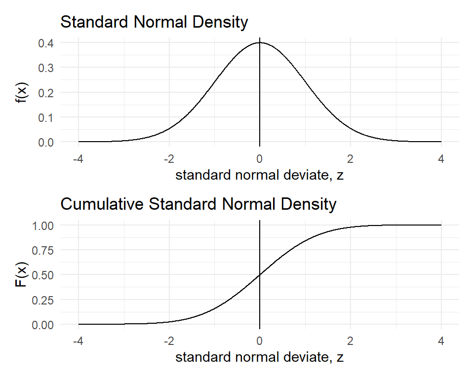
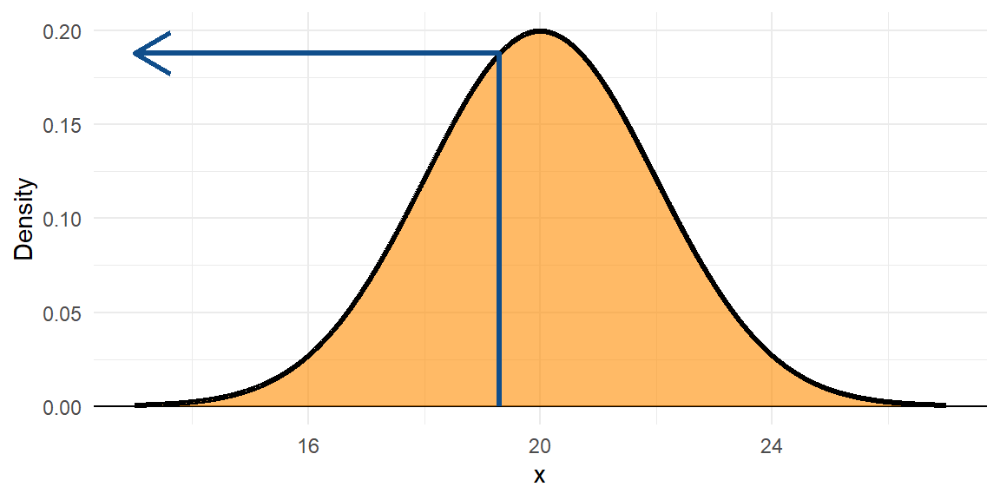
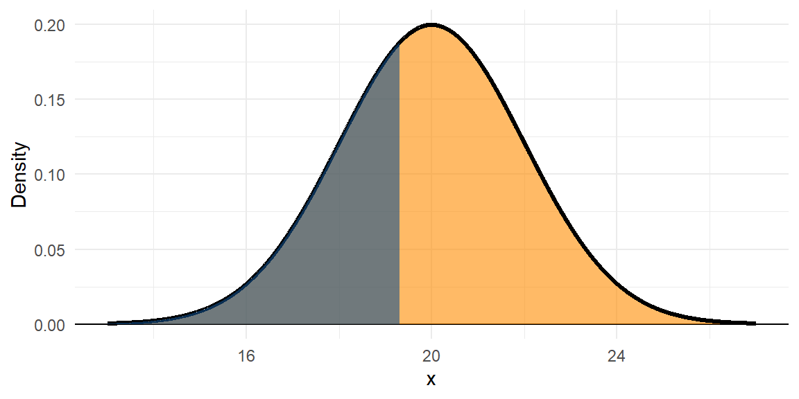
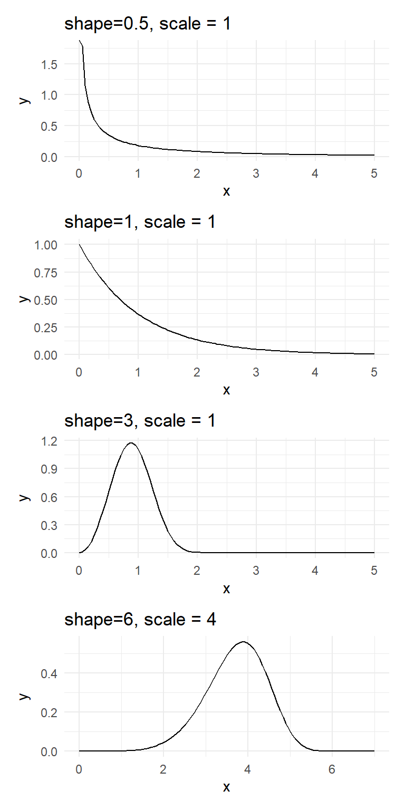

“Misunderstanding of probability may be the greatest of all impediments to scientific literacy.”
— Stephen Jay Gould
Probability and randomness
Probability and randomness are placeholders for incomplete knowledge.
After I shuffled a deck of cards, you might consider the identity of the top card to be “random”.
But is it really?
If you knew the starting positions of the cards and a good HD video of my shuffling, you could surely know the positions of the cards, and which is on top.
Likewise for rolling a die. If we know everything about the starting position, how it was thrown, the texture of the surface, humidity, etc., could we predict what it would roll?
Probability as a relative frequency
The classical definition of probability is just the relative frequency of an event.
If a fair die is rolled, there are \(n = 6\) possible outcomes. Let the event of interest be getting a number 4 or more. The probability of this event is 3 out of 6 or \(p=1/2\).
The sample space or the set of all possible outcomes need not be finite.
Example: Tossing a coin until the first head appears will result in an infinite sample space. The probability can be viewed as a limiting or long run fraction of \(m/n\) (i.e. when \(n \to \infty\)).
When the sample space is finite and outcomes are equally likely, we can assume that classical probability will be the same as empirical probability.
Example: To find the probability of a fair coin landing heads it is not necessary to toss the coin repeatedly and observe the proportion of heads.
Probabilities can only be between \(0\) (impossible) and \(1\) (certain).
Probabilities can be subjective (such as expert opinion, or a guess)
Mutually Exclusive Events
For mutually exclusive events,
The probability of any two events co-occurring is zero
The probability of one event or another event occurring is the sum of the two respective probabilities.
The probability of any one event not occurring is the sum of those remaining.
Example: A randomly selected single digit can be either odd (Event \(O\)) or even (Event \(E\)).
The events \(O\) and \(E\) are mutually exclusive because a number cannot be both odd and even.
The sample space is \(\{0,1,2,3,4,5,6,7,8,9\}\).
\(\rm{Pr(E~\&~O)=0}\)
\(\rm{Pr(E~ or~O)=1}\)
\(\rm{Pr(E)=1-Pr(O)}\)and\(\rm{Pr(O)=1-Pr(E)}\)
Statistical Independence
If events \(A\) and \(B\) are statistically independent, then \(P(A \text{ and } B) = P(A) \times P(B)\).
Conditional probability
\(P(A|B)\) is the probability of event \(A\) occurring given that event \(B\) is has occurred.
For example, the probability of a card you’ve drawn being a 5, given that it is a spade.
The sample space is reduced to that where \(B\) (e.g. the card is a spade) has occurred.
We say that two events (\(A\) and \(B\)) are independent if \(P(A | B) = P(A)\)and\(P(B | A) = P(B)\).
Observing event \(A\) doesn’t make event \(B\) any more or less likely, and vice versa.
For any two independent events \(A\) and \(B\), \(P(A \text{ and } B ) = P(A|B) \times P(B)\) and \(P(A \textbf{ and } B ) = P(B|A) \times P(A)\).
Blood Group Example
Two systems for categorising blood are:
the Rh system (Rh+ and Rh–)
the Kell system (K+ and K–)
For any person, their blood type in any one system
is independent of their blood type in any other.
For Europeans in New Zealand,
about 81% are Rh+ and about 8% are K+.
From the table:
If a European New Zealander is chosen at random, what is the probability that they are (Rh+ and K+) or (Rh– and K–)?
0.0648 + 0.1748 = 0.2396
Suppose that a murder victim has a bloodstain on him with type (Rh– and K+), presumably from the assailant. What is the probability that a randomly selected person matches this type?
\(P(A\mid B)\) and \(P(B\mid A)\) are conditional probabilities.
\(P(A)\) and \(P(B)\) are marginal or prior probabilities.
Prevalence, sensitivity, specificity, PPV, and NPV
Let \(D\) be the event of a person having the Disease and \(H\) be the event of a person being Healthy (i.e., not having the disease). The outcome of a test for the disease can be either positive \((T_+)\) or negative \((T_-)\).
Consider the following definitions of conditional probabilities:
prevalence is the overall probability one has the disease, or \(P(D)\).
sensitivity the probability that one tests positive given one has the disease, or \(P(T_+ | D)\).
specificity the probability that one tests negative given one does not have the disease, or \(P(T_- | H)\).
positive predictive value of a test is the probability one has the disease given that one has tested positive, or \(P(D \mid T_{+})\)
negative predictive value of a test is the probability that one is healthy given that one has tested negative, or \(P(H \mid T_{-})\)
Example
Say the following were true:
Prevalence: \(P(D) = 0.03\) and \(P(H) = 1-0.03=0.97\)
Sensitivity: \(P(T_+\mid D) = 0.98\)
Specificity: \(P(T_{-}\mid H) = 0.95\)
We can use Bayes Rule to answer the following questions:
What proportion of the overall population will test positive vs negative?
What are the implications of a positive or negative test result?
Probability tree
It can be useful to visualise the probabilities of the four possible states using a tree diagram.
Rules of the Probability Tree
Within each level, all branches are mutually exclusive events.
The tree covers all possibilities (i.e., the entire sample space).
We multiply as we move along branches.
We add when we move across branches.
T+
T-
D
0.0294
0.0006
0.03
H
0.0485
0.9215
0.97
Example continued
What proportion of the overall population will test positive vs negative?
The overall proportion of positive tests will be given by:
\[
\begin{aligned}
P(T_{+}) &= P(T_{+} \& D) + P(T_{+} \& H) \\
&= P(T_{+} \mid D)P(D) + P(T_{+} \mid H)P(H) \\
&= 0.98 \times 0.03 + 0.05 \times 0.97 \\
&= 0.0779
\end{aligned}
\] The overall proportion of negative tests will be given by:
The positive predictive value of the test is poor—only 38% of the subjects who tested positive will have the disease.
The negative predictive value is better—if a random subject tests negative, they’re very unlikely to have the disease.
Discrete probability distributions
Discrete probability distributions
Consider the number of eggs \((X)\) in an Adelie penguin’s nest. The values range from \(1\) to \(5\), each with a certain probability (or relative frequency) of occurrence.
Note the probabilities add to \(1\) because \({1,2,3,4,5}\) is a complete sample space.
The population mean \(\mu_X\) is simply the sum of each outcome multiplied by its probability.
\[\mu_X = E(X)= \sum xP(X=x)=\sum xP(x)\]
In R,
X <-1:5P <-c(0.1, 0.2, 0.3,0.25,0.15)(Mean=sum(X*P))
[1] 3.15
The population variance is given by
\[Var(X)= \sigma_X^2=\sum (x-\mu_X)^2 P(x)\]
The population SD is simply the square-root of the variance.
In R,
X <-1:5P <-c(0.1, 0.2, 0.3,0.25,0.15)Mean=sum(X*P)(Variance =sum((X-Mean)^2*P))
[1] 1.4275
(SD=sqrt(Variance))
[1] 1.19478
Binomial distribution
Consider a variable that has two possible outcomes
(say success and failure, with 50% probabilty each).
This can be described as a “Bernoulli” random variable.
A “Binomial” is just a collection of Bernoulli trials.
Let \(X\) be the number of heads when two coins are tossed.
The count of the number of successes\(X\) out of a fixed total of \(n\)independent trials follows the binomial distribution.
That is, \(X \sim Bin(n, p)\), where \(p\) the probability of a success.
The binomial probability function \(P(X=x)\) or \(P(x)\)
is given by \[P(x)={n \choose x}p^{x}(1-p)^{n-x}\]
For \(n=10\), \(p=0.3\), the binomial probabilities, \(P(x)\) for \(x=0,1,2, \dots, 10\), are plotted to the right.
If each of 10 basketball shots succeeded with probability 0.3, this describes the probability of your total score out of 10.
dfm <-data.frame(x =as.factor(0:10), Probability =dbinom(x =0:10, size =10, prob =0.3))ggplot(dfm) +aes(x = x, y = Probability) +geom_col() +xlab("Number of successes (x)") +annotate(geom ="table", label =list(dfm), x=11, y=.05)
Example
A microbiologist plates out certain bacteria on a plate, and picks out 10 colonies. She knows that the probability of successfully creating a recombinant is 0.15.
What is the probability that if she mixes all 10 colonies in a growth medium with penicillin, something (anything) will grow?
In other words:
If \(X \sim Bin(n = 10, p = 0.15)\), what is \(P(x > 0)\)?
Note \(P(x > 0)=1-P(x = 0)\). So in R, compute this as follows:
1-dbinom(x=0, size=10, prob=.15)
[1] 0.8031256
or
1-pbinom(q=0, size=10, prob=.15)
[1] 0.8031256
Binomial
The code pbinom(k,size=n,prob=p) gives the cumulative probabilities up to and including the quantile \(k\).
The Probability Mass Function (PMS) for a binomial random variable is:
The parameter \(\lambda\) is the mean which is also equal to the variance.
\[\mu_X=\lambda~~~~ \sigma^2_X=\lambda\]
Main assumptions:
The events occur at a constant average rate of \(\lambda\) per unit time or space.
Occurrences are independent of one another as well as they do not happen at exactly the same unit time or space.
Poisson example
Consider the number of changes that accumulate along a
stretch of a neutrally evolving gene over a given period of time.
This is a Poisson random variable with a
population mean of \(\lambda=kt\), where \(k\) is the number of mutations per generation, and \(t\) is the time in generations that has elapsed.
Assume that \(k = 1\times10^{-4}\) and \(t = 500\).
For \(\lambda=kt=0.05\), the Poisson probabilities are shown in the following plot.
What is the probability that at least one mutation has occurred over this period?
\(P(x > 0)=1-P(x = 0)\) is found in R as follows:
1-dpois(x=0, lambda=0.05)
[1] 0.04877058
Continuous probability distributions
Continuous probability distributions
A discrete random variable takes values which are simply points on a real line. In other words, there is an inherent discontinuity in the values a discrete random variable can take.
If a random variable, \(X\), can take any value (i.e., not just integers) in some interval of the real line, it is called a continuous random variable.
E.g., height, weight, length, percentage protein
For a discrete random variable \(X\), the associated probabilities \(P(X=x)\) are also just points or masses, and hence the probability function \(P(x)\) is also called as the probability mass function (PMF).
For continuous random variables, probabilities can be computed when the variable falls in an interval such as \(5\) to \(15\), but not when it takes a fixed value such as \(10\) (which is equal to zero).
The Probability Density Function (PDF) gives the relative likelihood of any particular value.
Continuous probability distributions
For example, consider a random proportion \((X)\) between \(0\) and \(1\). Here \(X\) follows a (standard) continuous uniform distribution whose (probability) density function \(f(x)\) is defined as follows:
\[f(x)=\begin{cases}{1}~~~\mathrm {for} \ 0\leq x\leq 1,\\[9pt]0~~~\mathrm {for} \ x<0\ \mathrm {or} \ x>1\end{cases}\] This constant density function is the simple one in the graph to the right.
The density is the relative likelihood of any value of \(x\); that is, the height of the Probability Density Function (PDF). Say, the leaves of a particular tree had mean length 20 cm, SD 2.
d <-tibble(x =seq(13, 27, by=0.01),Density =dnorm(x, 20, 2)) p <-ggplot(d) +aes(x, Density) +geom_hline(yintercept=0) +geom_area(colour =1,fill ="darkorange", size =1.1, alpha = .6) p

The black line is the PDF, or \(f(x)\). The orange area underneath the whole PDF is 1.
Continuous probability distributions
The density is the relative likelihood of any value of \(x\); that is, the height of the Probability Density Function (PDF). Say, the leaves of a particular tree had mean length 20 cm, SD 2.
d <-tibble(x =seq(13, 27, by=0.01),Density =dnorm(x, 20, 2)) p <-ggplot(d) +aes(x, Density) +geom_hline(yintercept=0) +geom_area(colour =1,fill ="darkorange", size =1.1, alpha = .6) p +annotate(geom ="path", x =c(19.3, 19.3, 13), y =c(0, rep(dnorm(19.3,20,2),2) ),arrow =arrow(),colour ="dodgerblue4", size =1.1)

The black line is the PDF, or \(f(x)\). The orange area underneath the whole PDF is 1.
The density at 19.3 is \(f(19.3) = 0.1876\)).
dnorm(19.3, mean =20, sd =2)
[1] 0.1876202
Continuous probability distributions
The density is the relative likelihood of any value of \(x\); that is, the height of the Probability Density Function (PDF). Say, the leaves of a particular tree had mean length 20 cm, SD 2.
d <-tibble(x =seq(13, 27, by=0.01),Density =dnorm(x, 20, 2)) p <-ggplot(d) +aes(x, Density) +geom_hline(yintercept=0) +geom_area(colour =1,fill ="darkorange", size =1.1, alpha = .6) p +geom_area(data = d |>filter(x <=19.3),fill ="dodgerblue4",size =1.1, alpha = .6)

The black line is the PDF, or \(f(x)\). The orange area underneath the whole PDF is 1.
The area under the curve to the left of the value 19.3 is given by the Cumulative Density Function (CDF), or \(F(x)\). It gives the probability that x < 19.3; \(F(19.3) = 0.3632\).
pnorm(19.3, mean =20, sd =2)
[1] 0.3631693
Continuous probability distributions
The cumulative distribution function, CDF, \(F(x)\) gives the left tail area or probability up to \(x\). This is probability is found as
\[F_{X}(x)=\int _{-\infty }^{x}f_{X}(t)\,dt\] The relationship between the density function \(f(x)\) and the distribution function \(F(x)\) is given by the Fundamental Theorem of Calculus.
\[f(x)={dF(x) \over dx}\]
Continuous probability distributions
The total area under the PDF curve is \(1\). The probability of obtaining a value between two points (\(a\) and \(b\)) is the area under the PDF curve between those two points. This probability is given by \(F(b)-F(a)\).
For the uniform distribution \(U(0,1)\), \(f(x)=1\). So
\[F_{X}(x)=\int _{-\infty }^{x}\,dt=x\]
For example, the probability of a randomly drawn fraction from the interval \([0,1]\) to fall below \(x=0.5\) is 50%.
The probability of a random fraction falling between \(a=0.2\) and \(b=0.8\) is
\[F(b)-F(a)=0.8-0.2=0.6\]
The Normal (Gaussian) Distribution
The Gaussian or Normal Distribution is parameterised in terms of the mean \(\mu\) and the variance \(\sigma ^{2}\) and its Probability Density Function (PDF) is given by
\[f(x)={\frac {1}{\sigma {\sqrt {2\pi }}}}e^{-{\frac {1}{2}}\left({\frac {x-\mu }{\sigma }}\right)^{2}}\] A Standard Normal Distribution has mean \(\mu=0\) and standard deviation \(\sigma=1\). It has a simpler PDF:
\[f(z)={\frac {1}{ {\sqrt {2\pi }}}}e^{-{\frac {1}{2}}z^{2}}\] If \(X \sim N(\mu, \sigma)\), you can convert the \(X\) values into \(Z\)-scores by subtracting the mean \(\mu\) and dividing by the standard deviation \(\sigma\).
\[Z={\frac {X-\mu }{\sigma }}\]
We often deal with the standard normal because the symmetric bell shape of the normal distribution remains the same for all \(\mu\) and \(\sigma\).
dfn <-tibble(x=seq(-4,4,length=1000), `f(x)`=dnorm(x), `F(x)`=pnorm(x))p1 <-ggplot(dfn) +aes(x=x,y=`f(x)`) +geom_line() +geom_vline(xintercept =0) +labs(title ="Standard Normal Density", x ="standard normal deviate, z")p2 <-ggplot(dfn) +aes(x=x,y=`F(x)`) +geom_line() +geom_vline(xintercept =0) +labs(title ="Cumulative Standard Normal Density", x ="standard normal deviate, z")p1/p2
Example of a normal
The weight of an individual of Amphibola crenata, a marine snail,
is normally distributed with a mean of \(40g\) and variance of \(20g^2\).
\(\beta~(> 0)\) is the called the shape parameter and \(\eta~(> 0)\) is the called scale parameter.
The Weibull distribution becomes the exponential distribution for \(\beta=1\).
The scale parameter \(\eta\) is called the characteristic life because \(\eta\) becomes the quantile with slightly less than two-thirds of the population (63%) below it irrespective of the shape \(\beta\).

Gamma distribution
The probability function of the gamma distribution with shape parameter \(\alpha\) and scale parameter \(\beta\) is given below:
Symmetrical distributions such as normal (read corresponding to zero skew) are poor fits. Lognormal also does not fare well.
When the observed data is a mixture from two or more distributions or contain a large number of unusual observations, no single distributional fit will be satisfactory.